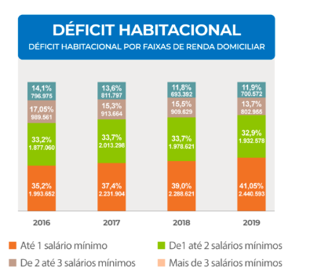

Moradia
De acordo com uma pesquisa da Fundação João Pinheiro, de 2019, o déficit habitacional em todo o Brasil foi de 5,8 milhões de moradias, das quais 79% concentraram-se em famílias de baixa renda.
O estudo indica também que 87,7% do déficit habitacional quantitativo (moradias em falta, seja por habitação precária, coabitação familiar, pessoas demais por metro quadrado, ou custo alto de aluguel) está localizado nas áreas urbanas. Além disso, ele demonstra que o déficit habitacional absoluto no Brasil passou de 5,657 milhões em 2016 para 5,877 milhões em 2019. Essas moradias representam 8% dos domicílios do país.

Em 2021, o desemprego e a pandemia fizeram a extrema pobreza e a desigualdade social aumentarem no Brasil. Mais de 20 milhões de pessoas estão passando fome, ou seja, quase 10% da população brasileira está subalimentada.
Propostas para solução de problemas
Programas de Subsídio Direto
O governo pode fornecer subsídios diretos para indivíduos ou famílias de baixa renda, ajudando a cobrir parte do custo do aluguel. Isso pode ser feito por meio de pagamentos mensais diretos aos locatários ou por meio de programas de vales-aluguel.
Parcerias Público-Privadas (PPPs)
O governo pode trabalhar em parceria com o setor privado para desenvolver unidades habitacionais de aluguel a preços acessíveis. Isso pode envolver incentivos fiscais para os desenvolvedores, garantias de empréstimos ou subsídios para reduzir os custos de construção.
Regulação de Aluguéis
Em algumas áreas, a regulamentação dos preços dos aluguéis pode ser uma opção viável para evitar aumentos excessivos e garantir que os aluguéis permaneçam acessíveis para a população de baixa renda.
Incentivos Fiscais para Proprietários
O governo pode oferecer incentivos fiscais para proprietários que ofereçam aluguéis a preços acessíveis. Isso pode incluir isenções fiscais parciais ou totais, descontos em impostos sobre a propriedade ou incentivos para a renovação de unidades habitacionais para torná-las mais acessíveis.
Apoio a Cooperativas Habitacionais
Promover e apoiar cooperativas habitacionais, onde os moradores são proprietários coletivos de suas habitações, pode ser uma solução sustentável para fornecer moradias acessíveis a longo prazo.
Programas de Habitação Social
Investir em programas de habitação social para construir e manter unidades habitacionais a preços acessíveis para aluguel pode ser uma solução direta para atender às necessidades de moradia daqueles que não podem pagar os preços de mercado.
Desenvolvimento de Terrenos Públicos
O governo pode desenvolver terrenos públicos para construir unidades habitacionais de aluguel a preços acessíveis. Isso pode incluir a concessão de terras a desenvolvedores que concordem em construir habitações acessíveis.
Educação Financeira e Assistência ao Aluguel
Além de subsídios diretos, oferecer programas de educação financeira e assistência ao aluguel pode ajudar os inquilinos a administrar melhor seus orçamentos e evitar a inadimplência no aluguel.